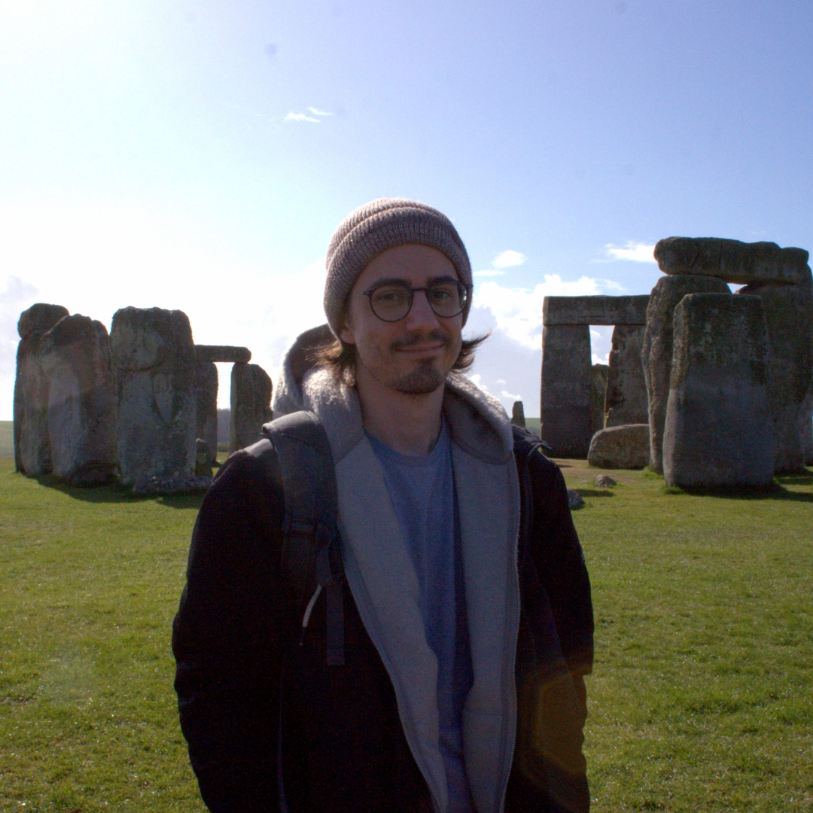

|
Daniel Frey
PhD candidate at Technical University of Munich (TUM), affiliated with the Chair of Biomedical Physics and the Munich Institute of Biomedical Engineering, in close collaboration with the Chair of AI in Healthcare and Medicine.
My research focuses on advancing the clinical translation of human-scale dark-field computed tomography (DFCT), an X-ray modality based on small-angle scattering with strong potential for pulmonary imaging.
I develop methods for DFCT streak artifact reduction and image quality enhancement using (self)-supervised techniques and alternative image representations, aiming to bridge physics-based domain knowledge with modern machine learning.
I hold Bachelor's degrees in Biochemistry and Physics from TUM, where I was first introduced to dark-field imaging. I went on to complete the Biomedical Engineering and Medical Physics (BEMP) Master's program, which I finished with a thesis on the human-scale DFCT prototype. Alongside my studies, I gained practical engineering experience at the TÜV SÜD electrical safety department, and developed expertise in deep learning workflows for neuroimaging as part of the Morphometry Group at TUM University Hospital.
|

|
Human-scale Dark-field Computed Tomography (DFCT)
Overview
-
Clinical Dark-field Computed Tomography: From Prototype to Patient
XNPIG 2026, Garching, DE
D. Frey*, J. F. Hilmer*,
S. Demianova, L. Kayser, P. Bleuel, T. Hiu, T. Dorosti, J. B. Thalhammer, T. Koehler, F. Schaff, F. Pfeiffer
Lung Phantom Development
-
X-ray Dark-field CT Radiomics for Lung Phantom Assessment
S. Demianova*, D. Frey*,
P. Bleuel, J. F. Hilmer, L. Kayser, D. Pfeiffer, T. Koehler, F. Pfeiffer
We demonstrate that dark-field CT radiomic texture features support the characterization of lung phantoms.
X-ray Phase Retrieval
Physics-guided Representations
-
SONAR Project Page
-
A Physics-guided Implicit Neural Representation for Streak Reduction in X-ray Dark-field CT
Oral (Lightning Talk)
Poster
SAIMI 2026, Bern, CH
D. Frey*, T. Hiu*,
J. McGinnis, T. Dorosti, J. B. Thalhammer, S. Peterhansl, Z. Huang, F. Pfeiffer, D. Rueckert, F. Schaff
-
SONAR: A Physics-constrained Neural Representation for X-ray Dark-field CT
Oral (2nd Place Poster Pitch)
Poster
MIDL 2026, Taipei, TW
D. Frey*, T. Hiu*,
J. McGinnis, T. Dorosti, J. B. Thalhammer, S. Peterhansl, Z. Huang, F. Pfeiffer, D. Rueckert, F. Schaff
We propose SONAR, a trimodal INR constrained by Talbot–Lau interferometer physics for enhanced DFCT reconstruction.
Tomographic Reconstruction
3D Gaussian Splatting
-
Robust Sparse-view Dark-field CT with 3D Gaussian Splatting
IEEE ISBI 2026, London, UK
D. Frey*, T. Dorosti*,
J. McGinnis, T. Hiu, F. I. Ozlugedik, J. B. Thalhammer, S. Peterhansl, D. Rueckert, F. Pfeiffer, F. Schaff
We improve sparse-view dark-field CT reconstruction quality via 3D Gaussian splatting compared to FDK.
Diffusion Posterior Sampling
-
Adaptive Diffusion Priors on Pre-clinical CT Reconstruction
T. Hiu*, D. Frey*, T. Dorosti, J. B. Thalhammer, S. Peterhansl, Z. Huang, S. Zandarco, F. Pfeiffer, F. Schaff
We explore diffusion-based reconstruction with physics consistency and LoRA adaptation for dark-field CT under severe undersampling.
Post-processing
3D Gaussian Splatting

-
Streak-reduced Human-scale Dark-field CT with 3D Gaussian Splatting
T. Dorosti*, D. Frey*,
J. B. Thalhammer, J. F. Hilmer, P. Bleuel, S. Peterhansl, J. McGinnis, D. Rueckert, D. Pfeiffer, F. Pfeiffer, F. Schaff
-
Streak Artifact Reduction in Human-scale Dark-field CT Using 3D Gaussian Splatting
T. Dorosti*, D. Frey*,
J. B. Thalhammer, J. F. Hilmer, P. Bleuel, S. Peterhansl, J. McGinnis, D. Rueckert, D. Pfeiffer, F. Pfeiffer, F. Schaff
-
Streak Artifact Reduction in Human-scale Dark-field CT Using 3D Gaussian Splatting
SAIMI 2026, Bern, CH
T. Dorosti*, D. Frey*,
J. B. Thalhammer, J. F. Hilmer, P. Bleuel, S. Peterhansl, J. McGinnis, D. Rueckert, D. Pfeiffer, F. Pfeiffer, F. Schaff
-
Streak Artifact Reduction in Human-scale Dark-field CT Using 3D Gaussian Splatting
T. Dorosti*, D. Frey*,
J. B. Thalhammer, J. F. Hilmer, P. Bleuel, S. Peterhansl, J. McGinnis, D. Rueckert, D. Pfeiffer, F. Pfeiffer, F. Schaff
We repurpose 3D Gaussian splatting as streak artifact filter for reconstructed human-scale dark-field CT volumes.
Convolutional Neural Networks
-
Structured Loss Amplification for U-Net-based Human-scale Dark-field CT Streak Reduction
D. Frey*, T. Dorosti*,
J. B. Thalhammer, J. F. Hilmer, P. Bleuel, T. Hiu, S. Peterhansl, J. McGinnis, T. Koehler, D. Pfeiffer, F. Pfeiffer, D. Rueckert, F. Schaff
-
Structured Loss Amplification for U-Net-based Dark-field CT Noise and Streak Reduction
XNPIG 2026, Garching, DE
D. Frey*, T. Dorosti*,
J. B. Thalhammer, J. F. Hilmer, P. Bleuel, T. Hiu, S. Peterhansl, J. McGinnis, T. Koehler, D. Pfeiffer, F. Pfeiffer, D. Rueckert, F. Schaff
We introduce a structured loss formulation for U-Net-based streak reduction in human-scale dark-field CT using spatial and frequency-aware modulations.
Other Projects
Neuroimaging
-
MultipleMS Spinal Cord MRI
ECTRIMS 2024, Kopenhagen, DK
D. Frey,
J. McGinnis, M. Mühlau
Status update on MultipleMS, a multi-center longitudinal cohort study for spinal cord lesion analysis in MS.
|
{kind=link}